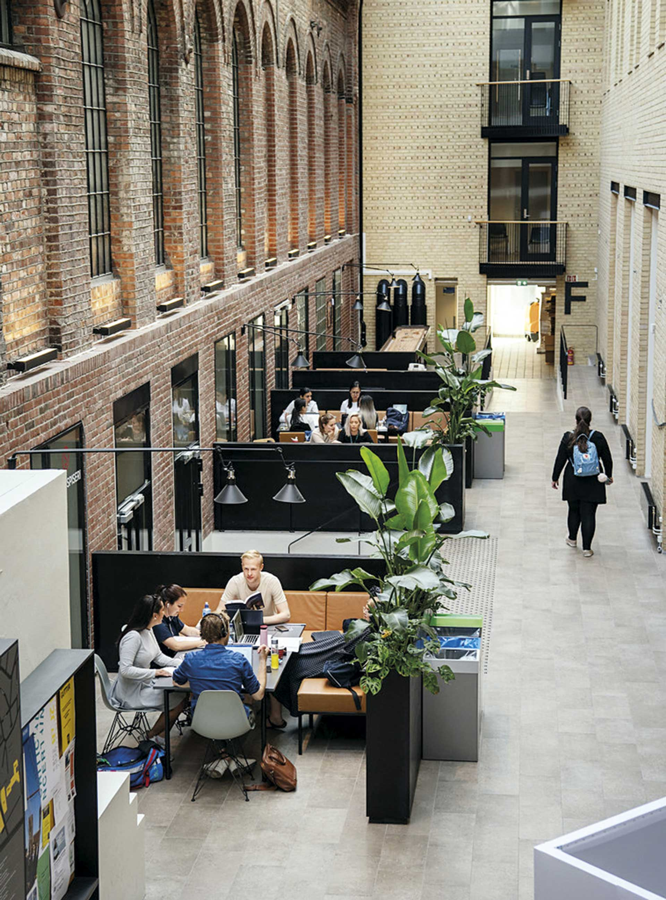
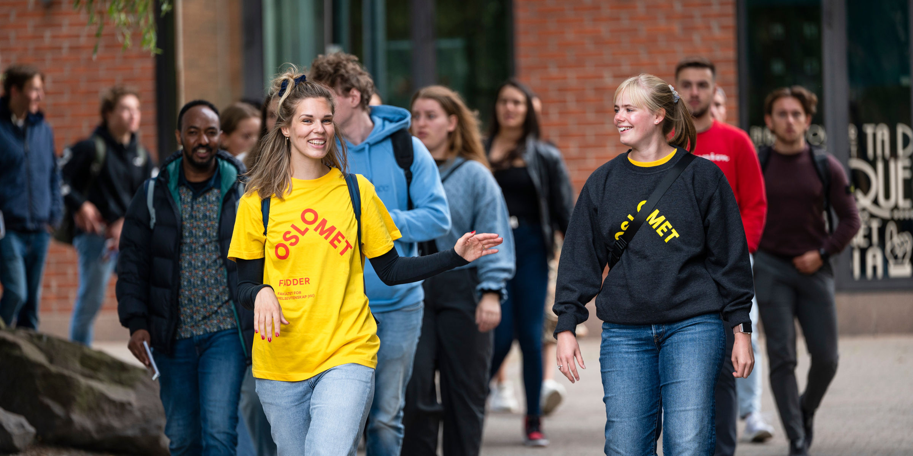
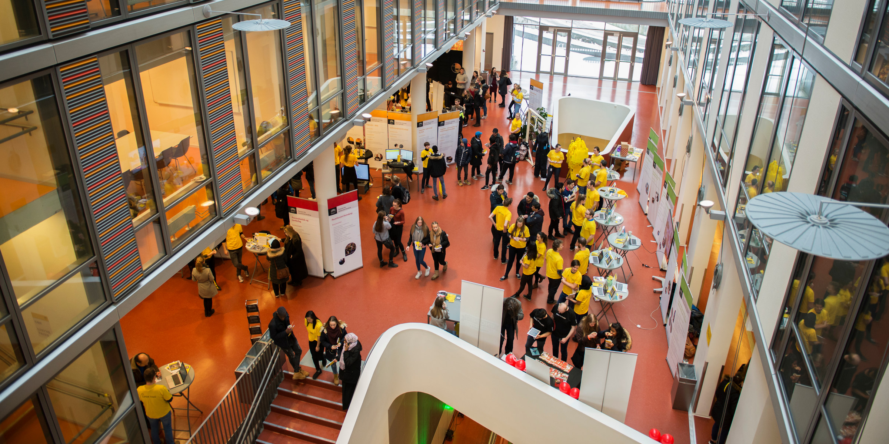

Inne på campus. Foto: OsloMet
Oslomet – storbyuniversitetet, tidligere Høgskolen i Oslo og Akershus (HiOA),
er et norsk statlig universitet med studiesteder i Oslo kommune (studiested Pilestredet) og
Lillestrøm kommune (studiested Kjeller). Universitetet vedtok i april 2020 at det skal ha to
fullverdige campuser i Oslo og på Romerike, noe som innebærer at en stor del av virksomheten skal
flyttes ut av Oslo. Oslomet driver forskning og utdanning innen samfunnsvitenskap, helsefag,
lærerutdanning, teknologi, kunst og design.

Blide faddere. Foto: OsloMet
Oslomet har per dags dato 21 950 studenter. Universitetet tilbyr flere
studier innenfor mange retninger. Oslomet har totalt 37 bachelorstudier, 67 masterstuder og 7
phd-studier. Alt fra barnehagelærer til økonomi og administrasjon. Dette universitetet hadde i
2023 14 188 førstevalgsøkere. Dette illustrerer hvor gode studietilbud Oslomet har.

Inne på campus. Foto: OsloMet
HiOA leverte 22. februar 2017 søknad om universitetsakkreditering til NOKUT,
med mål om å oppnå universitetsstatus innen kort tid. HiOA sendte den endelige søknaden til
Kunnskapsdepartementet 15. desember 2017, etter at NOKUT hadde konkludert med at institusjonen
oppfylte vilkårene for universitetsstatus. 12. januar 2018 vedtok regjeringen å tildele høgskolen
universitetsstatus med virkning fra samme dag.